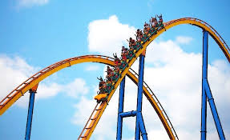
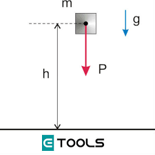
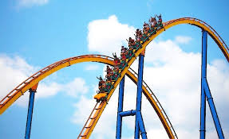

La posee un cuerpo o sistema debido al movimiento. La física la define como la cantidad de trabajo realizado por todas las fuerzas que actúan sobre un cuerpo como una masa determinada, necesario para acelerarlo desde una velocidad inicial hasta otra velocidad final. Una vez alcanzada dicha velocidad según la Ley de la Inercia, la cantidad de energía cinética acumulada permanecerá constante, es decir, no variará, a menos que otra fuerza actúe sobre el cuerpo, ejerciendo un trabajo sobre él, cambiando su velocidad y, por lo tanto, su energía cinética
|  |
|